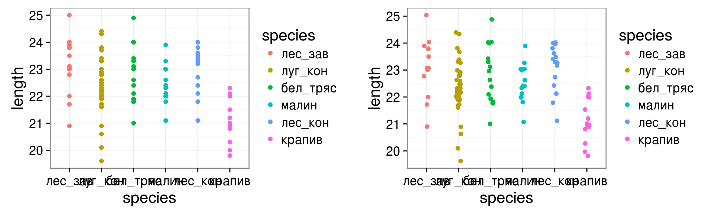
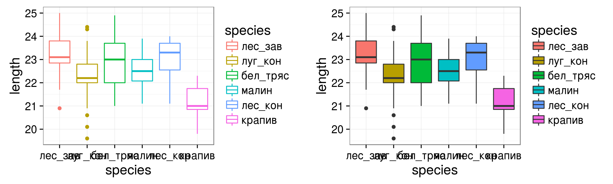
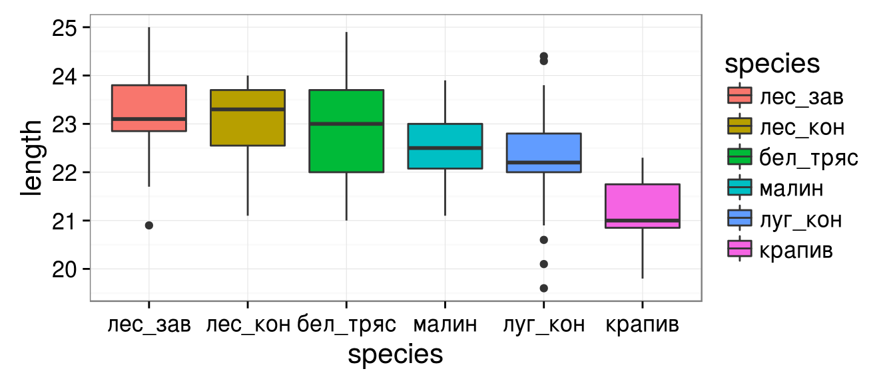
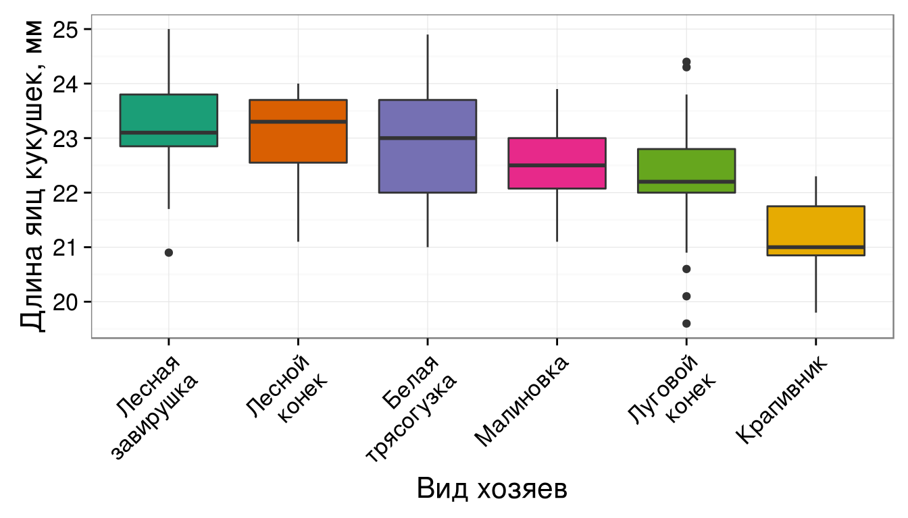
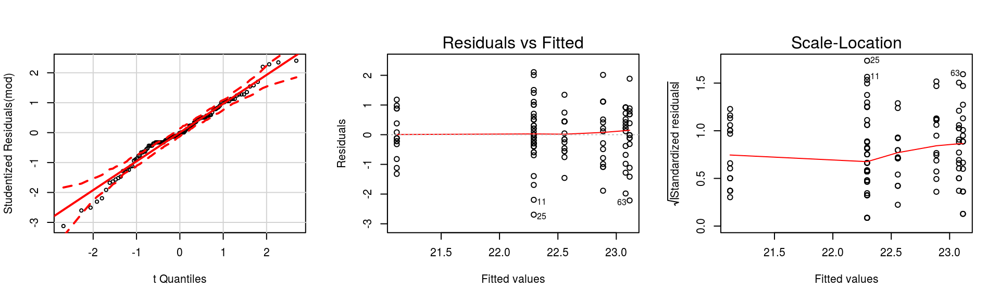
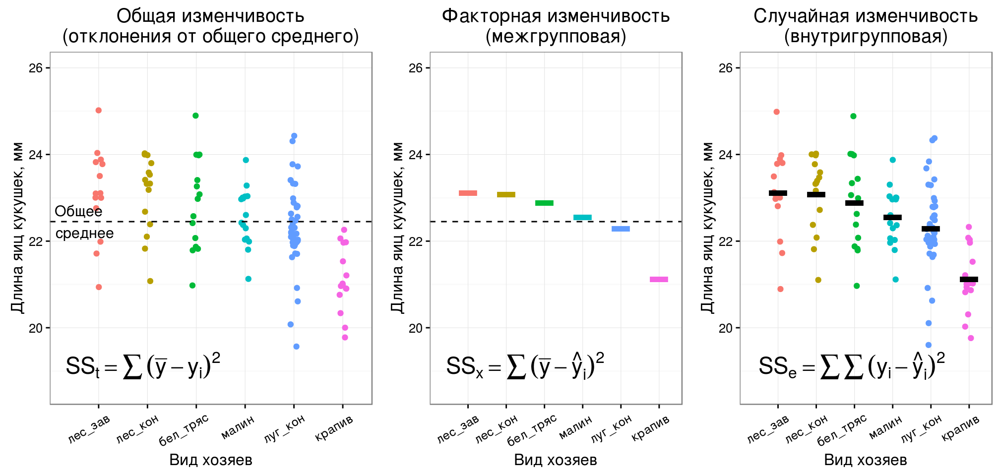
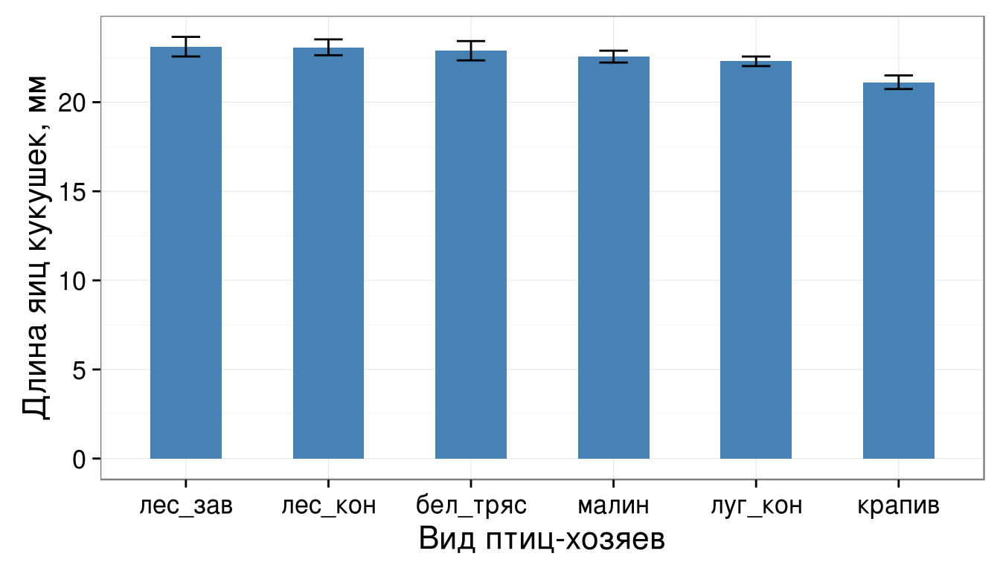
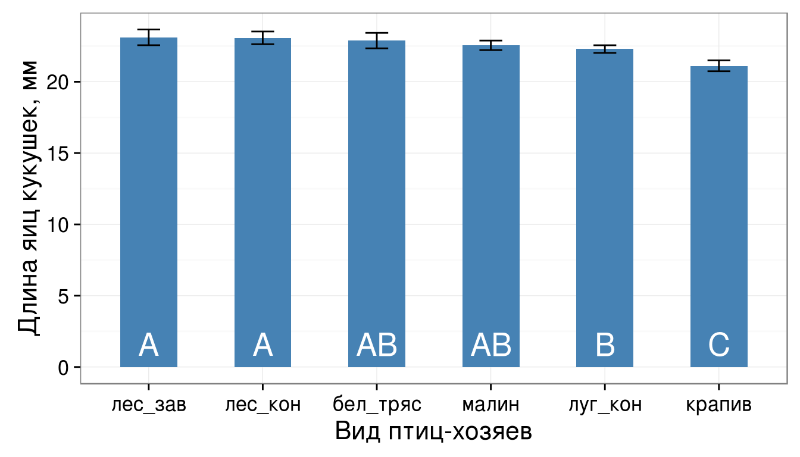
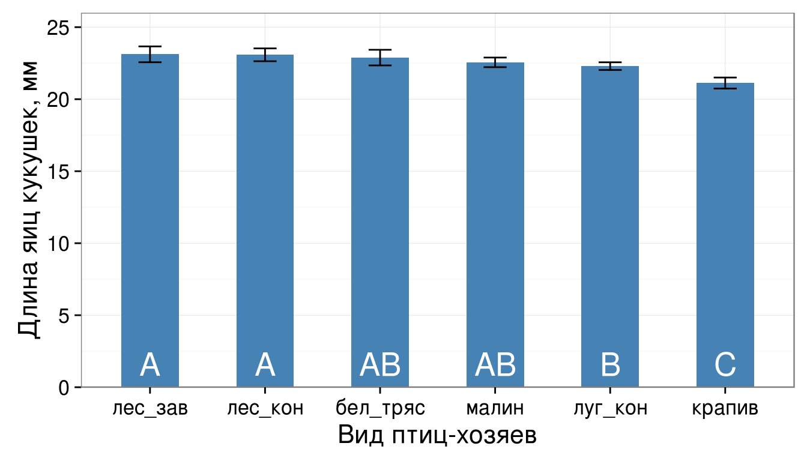
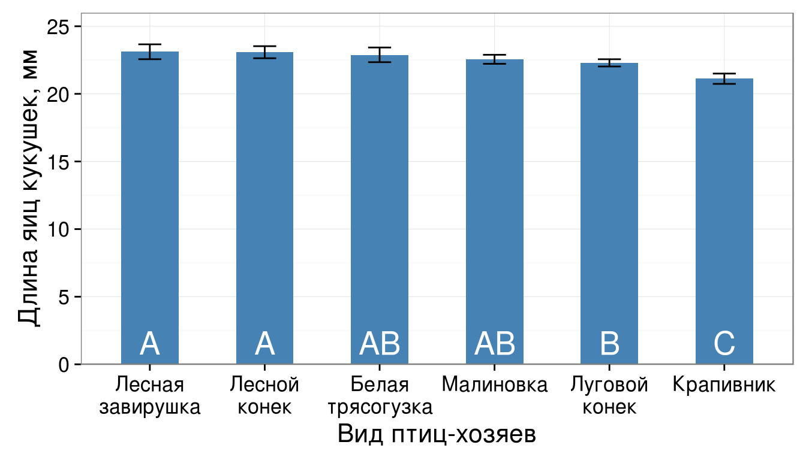

\[y _{ij} = \mu + \alpha _i + \epsilon _{ij}\]
\(\alpha\) - фактор с i = 1, …, I группами
\(\mu\) - общее среднее
j = 1, …, \(J _i\) - число наблюдений на каждом из уровней фактора
Чтобы можно было найти параметры такой модели, приходится вводить ограничения одним из способов:
| \(\mu = 0\) | \(\alpha_1 = 0\) | \(\sum_i{J_i\alpha_i} = 0\) |
|---|---|---|
| Модель фиктивных переменныхDummy (indicator) coding = treatment parametrization = reference cell model | Модель эффектовDeviation (effects) coding = Sum to zero parametrization | |
| по-умолчанию используется в R | часто используется для объяснения в книгах и в др. программах | |
| contr.treatment | contr.sum |
При условии, что \(\sum_i{J_i\alpha_i} = 0\), значения зависимой переменной в группах можно описать как отклонения от общего среднего.
\[y _{ij} = \mu + \alpha _i + \epsilon _{ij}\]
Из чего складываются средние значения в группах по фактору?
| Группа | Общее среднее | Эффект для данного уровня | Случайная изменчивость |
|---|---|---|---|
| A1 | \(\mu\) | \(\alpha _1\) | \(\epsilon _{1j}\) |
| A2 | \(\mu\) | \(\alpha _2\) | \(\epsilon _{2j}\) |
| … | … | … | … |
| Ai | \(\mu\) | \(\alpha _i\) | \(\epsilon _{ij}\) |
Модель \(y _{ij} = \mu + \alpha _i + \epsilon _{ij}\), если \(\alpha_1 = 0\) примет уже знакомую нам форму
\[y _{ij} = \beta _0 + \beta _1 x _1 + ... + \beta _i x _{i-1} + \epsilon _{ij}\]
Коэффициенты линейной модели обозначают отклонения от базового уровня
| Группа | Среднее на базовом уровне | Эффект для данного уровня | Случайная изменчивость |
|---|---|---|---|
| A1 | \(\beta_0\) | \(\epsilon _{1j}\) | |
| A2 | \(\beta_0\) | \(beta_1\) | \(\epsilon _{2j}\) |
| … | … | … | … |
| Ai | \(\beta_0\) | \(beta_{i-1}\) | \(\epsilon _{ij}\) |
species - вид птиц-хозяев (фактор)length - длина яиц кукушек в гнездах хозяев (зависимая переменная)library(DAAG)
data("cuckoos")
# Положим данные в переменную с коротким названием, чтобы меньше печатать
cu <- cuckoos
head(cu, 3)
## length breadth species id ## 1 21.7 16.1 meadow.pipit 21 ## 2 22.6 17.0 meadow.pipit 22 ## 3 20.9 16.2 meadow.pipit 23
# Пропущенных значений нет sum(is.na(cu))
## [1] 0
# Данные не сбалансированы - размеры групп разные. table(cu$species)
## ## hedge.sparrow meadow.pipit pied.wagtail robin tree.pipit ## 14 45 15 16 15 ## wren ## 15
levels(cu$species)
## [1] "hedge.sparrow" "meadow.pipit" "pied.wagtail" "robin" ## [5] "tree.pipit" "wren"
levels(cu$species) <- c("лес_зав", "луг_кон", "бел_тряс",
"малин", "лес_кон", "крапив")
Постройте график зависимости размера яиц кукушек от вида птиц-хозяев, в гнездах которых были обнаружены яйца. Какой геом лучше подойдет для изображения (geom_point, geom_boxplot)?
Раскрасьте график в зависимости от вида птиц-хозяев (используйте эстетики fill или colour - чем отличаются результаты?)
Попробуйте сменить палитру раскраски, используя scale_colour_brewer (варианты можно посмотреть в справке в подразделе примеров или в интернете Colors (ggplot2): раздел RColorBrewer palette chart
library(ggplot2)
theme_set(theme_bw(base_size = 16) +
theme(legend.key = element_blank()))
# основа для графика без геомов
gg_cu <- ggplot(data = cu, aes(x = species, y = length))
В данном случае точечные графики не очень удачны, даже если мы вносим небольшую случайную погрешность в координаты по дискретной оси \(x\) (position = position_jitter(width = 0.2))
gg_cu + geom_point(aes(colour = species))
gg_cu + geom_point(aes(colour = species),
position = position_jitter(width = 0.2))

gg_cu + geom_boxplot(aes(colour = species)) gg_cu + geom_boxplot(aes(fill = species))

Сейчас боксы расположены в беспорядке. Упорядочим их по убыванию средней длины яиц. Для этого
# упорядочим по значению среднего в группах (сначала по возрастанию, потом наоборот) cu$species <- reorder(cu$species, cu$length, FUN = mean) cu$species <- factor(cu$species, levels = rev(levels(cu$species)))
Поскольку изменив порядок уровней мы внесли изменения в исходные данные, придется полностью обновить график (т.к.ggplot() хранит данные внутри графика).
gg_box <- ggplot(data = cu, aes(x = species, y = length)) + geom_boxplot(aes(fill = species)) gg_box

gg_box + labs(x = "Вид хозяев", y = "Длина яиц кукушек, мм") +
# Другая палитра заливки
scale_fill_brewer(name = "Вид \nхозяев", palette = "Dark2") +
# Названия видов
scale_x_discrete(labels = c("Лесная\nзавирушка", "Лесной\nконек",
"Белая\nтрясогузка", "Малиновка", "Луговой\nконек", "Крапивник")) +
# Положение легенды, формат подписей по оси х
theme(axis.text.x = element_text(angle = 45, hjust = 1), legend.position = "none")

Сколько переменных-болванок нужно, чтобы записать модель зависимости длины яиц кукушек от вида птиц-хозяев?
Подберите линейную модель зависимости длины яиц кукушек в гнездах от вида птиц-хозяев
Проверьте условия применимости дисперсионного анализа
levels(cu$species), уровень лес_зав будет базовым, и для его кодирования не нужна отдельная переменная).Вот так бы они выглядели, если бы нужно было создавать их вручную.
levels(cu$species)
## [1] "лес_зав" "лес_кон" "бел_тряс" "малин" "луг_кон" "крапив"
(gr1 <- as.numeric(cu$species == "лес_кон"))
## [1] 0 0 0 0 0 0 0 0 0 0 0 0 0 0 0 0 0 0 0 0 0 0 0 0 0 0 0 0 0 0 0 0 ## [33] 0 0 0 0 0 0 0 0 0 0 0 0 0 1 1 1 1 1 1 1 1 1 1 1 1 1 1 1 0 0 0 0 ## [65] 0 0 0 0 0 0 0 0 0 0 0 0 0 0 0 0 0 0 0 0 0 0 0 0 0 0 0 0 0 0 0 0 ## [97] 0 0 0 0 0 0 0 0 0 0 0 0 0 0 0 0 0 0 0 0 0 0 0 0
gr2 <- as.numeric(cu$species == "бел_тряс") gr3 <- as.numeric(cu$species == "малин") gr4 <- as.numeric(cu$species == "луг_кон") gr5 <- as.numeric(cu$species == "крапив")
mod <- lm(length ~ species, data = cu) ### Проверяем условия применимости library(car) op <- par(mfrow = c(1, 3)) qqPlot(mod) plot(mod, which = 1) plot(mod, which = 3)

par(op)
library(lmtest) bptest(mod)
## ## studentized Breusch-Pagan test ## ## data: mod ## BP = 3, df = 5, p-value = 0.7
Влияет ли вид птиц-хозяев на длину яиц кукушек? Было бы удобнее, если бы ответ был из одного числа, вместо пачки коэффициентов. Дисперсионный анализ позволит оценить влияние каждого из факторов.
summary(mod)
## ## Call: ## lm(formula = length ~ species, data = cu) ## ## Residuals: ## Min 1Q Median 3Q Max ## -2.6933 -0.3933 -0.0143 0.5083 2.1067 ## ## Coefficients: ## Estimate Std. Error t value Pr(>|t|) ## (Intercept) 23.1143 0.2419 95.54 < 2e-16 *** ## speciesлес_кон -0.0343 0.3364 -0.10 0.9190 ## speciesбел_тряс -0.2276 0.3364 -0.68 0.5000 ## speciesмалин -0.5580 0.3313 -1.68 0.0948 . ## speciesлуг_кон -0.8210 0.2770 -2.96 0.0037 ** ## speciesкрапив -1.9943 0.3364 -5.93 0.000000033 *** ## --- ## Signif. codes: 0 '***' 0.001 '**' 0.01 '*' 0.05 '.' 0.1 ' ' 1 ## ## Residual standard error: 0.905 on 114 degrees of freedom ## Multiple R-squared: 0.314, Adjusted R-squared: 0.284 ## F-statistic: 10.4 on 5 and 114 DF, p-value: 0.0000000285
Общая изменчивость (SSt) = Факторная (SSx) + Случайная (SSe)
Если выборки из одной совокупности, то Факторная изменчивость = Случайная изменчивость

Гипотезы:
\(H _0: MS _x = MS _e\), \(H _A: MS _x ≠ MS _e\)
| Источник изменчивости | Суммы квадратов отклонений, SS |
Число степеней свободы, df |
Средний квадрат отклонений (дисперсия), MS |
F |
|---|---|---|---|---|
| Название фактора | \[SS _x = \sum{(\bar y - \hat y _i)^2}\] | \[df _x = a - 1\] | \[MS _x = \frac{SS _x}{df _x}\] | \[F _{df _r, df _e} = \frac{MS _r}{MS _e}\] |
| Случайная | \[SS _e = \sum{(y _i - \hat y _i)^2}\] | \[df _e = N - a\] | \[MS _e = \frac{SS _e}{df _e}\] | |
| Общая | \[SS _t = \sum {(\bar y - y _i)^2}\] | \[df _t = N - 1\] |
В R есть много функций для дисперсионного анализа. Мы рекомендуем Anova() из пакета car
cu_anova <- Anova(mod) cu_anova
## Anova Table (Type II tests) ## ## Response: length ## Sum Sq Df F value Pr(>F) ## species 42.8 5 10.4 0.000000029 *** ## Residuals 93.4 114 ## --- ## Signif. codes: 0 '***' 0.001 '**' 0.01 '*' 0.05 '.' 0.1 ' ' 1
Дисперсионный анализ говорит нам только есть ли влияние фактора, но не говорит, какие именно группы различаются.
Коэффициенты линейной модели в summary(mod) содержат лишь часть ответа - сравнение средних значених всех групп со средним на базовом уровне.
Если нас интересуют другие возможные попарные сравнения, нужно сделать пост хок тест.
Пост-хок тесты - попарные сравнения средних после того, как дисперсионный анализ показал, что влияние фактора достоверно
glht() - "general linear hypotheses testing"linfct - аргумент, задающий гипотезу для тестирования
mcp() - функция, чтобы задавать множественные сравнения (обычные пост-хоки)species = "Tukey" - тест Тьюки по фактору species
library(multcomp) cu_ph <- glht(mod, linfct = mcp(species = "Tukey"))
Таблица результатов пост хок теста практически нечитабельна. Лучше построить график.
summary(cu_ph)
## ## Simultaneous Tests for General Linear Hypotheses ## ## Multiple Comparisons of Means: Tukey Contrasts ## ## ## Fit: lm(formula = length ~ species, data = cu) ## ## Linear Hypotheses: ## Estimate Std. Error t value Pr(>|t|) ## лес_кон - лес_зав == 0 -0.0343 0.3364 -0.10 1.000 ## бел_тряс - лес_зав == 0 -0.2276 0.3364 -0.68 0.984 ## малин - лес_зав == 0 -0.5580 0.3313 -1.68 0.538 ## луг_кон - лес_зав == 0 -0.8210 0.2770 -2.96 0.041 * ## крапив - лес_зав == 0 -1.9943 0.3364 -5.93 <0.001 *** ## бел_тряс - лес_кон == 0 -0.1933 0.3305 -0.58 0.992 ## малин - лес_кон == 0 -0.5237 0.3253 -1.61 0.587 ## луг_кон - лес_кон == 0 -0.7867 0.2699 -2.91 0.047 * ## крапив - лес_кон == 0 -1.9600 0.3305 -5.93 <0.001 *** ## малин - бел_тряс == 0 -0.3304 0.3253 -1.02 0.909 ## луг_кон - бел_тряс == 0 -0.5933 0.2699 -2.20 0.241 ## крапив - бел_тряс == 0 -1.7667 0.3305 -5.34 <0.001 *** ## луг_кон - малин == 0 -0.2629 0.2635 -1.00 0.915 ## крапив - малин == 0 -1.4363 0.3253 -4.41 <0.001 *** ## крапив - луг_кон == 0 -1.1733 0.2699 -4.35 <0.001 *** ## --- ## Signif. codes: 0 '***' 0.001 '**' 0.01 '*' 0.05 '.' 0.1 ' ' 1 ## (Adjusted p values reported -- single-step method)
Пакет dplyr:
%>% оператор, перенаправляет значение слева в функцию справа в качестве исходных данныхgroup_by дальнейшие вычисления идут по группам, заданным ее аргументамиsummarise описывает группу строк значениями, вычисленным по формуле или несколькимlibrary(dplyr)
cu_summary <- cu %>%
group_by(species) %>%
summarise(.n = n(),
.mean = mean(length),
.sd = sd(length))
cu_summary
## # A tibble: 6 × 4 ## species .n .mean .sd ## <fctr> <int> <dbl> <dbl> ## 1 лес_зав 14 23.1 1.049 ## 2 лес_кон 15 23.1 0.880 ## 3 бел_тряс 15 22.9 1.072 ## 4 малин 16 22.6 0.682 ## 5 луг_кон 45 22.3 0.920 ## 6 крапив 15 21.1 0.754
Дополните код, чтобы одновременно рассчитывать доверительные интервалы к средним значениям.
library(dplyr)
cu_summary <- cu %>%
group_by(species) %>%
summarise(.n = n(),
.mean = mean(length),
.sd = sd(length))
cu_summary
cu_summary <- cu %>%
group_by(species) %>%
summarise(.n = n(),
.mean = mean(length),
.sd = sd(length),
.se = .sd/sqrt(.n),
lwr = .mean - qnorm(0.025) * .se,
upr = .mean + qnorm(0.025) * .se
)
cu_summary
## # A tibble: 6 × 7 ## species .n .mean .sd .se lwr upr ## <fctr> <int> <dbl> <dbl> <dbl> <dbl> <dbl> ## 1 лес_зав 14 23.1 1.049 0.280 23.7 22.6 ## 2 лес_кон 15 23.1 0.880 0.227 23.5 22.6 ## 3 бел_тряс 15 22.9 1.072 0.277 23.4 22.3 ## 4 малин 16 22.6 0.682 0.171 22.9 22.2 ## 5 луг_кон 45 22.3 0.920 0.137 22.6 22.0 ## 6 крапив 15 21.1 0.754 0.195 21.5 20.7
gg_means <- ggplot(cu_summary, aes(x = species, y = .mean)) + geom_bar(stat = "identity", fill = "steelblue", width = 0.5) + geom_errorbar(aes(ymin = lwr, ymax = upr), width = 0.2) + labs(x = "Вид птиц-хозяев", y = "Длина яиц кукушек, мм") gg_means

Достоверно различающиеся по пост-хок тесту группы обозначим разными буквами
gg_means_coded <- gg_means +
geom_text(aes(y = 1.6, label = c("A", "A", "AB", "AB", "B", "C")),
colour = "white", size = 7)
gg_means_coded

gg_means_coded + scale_y_continuous(expand = c(0, 0),
limits = c(0, max(cu$length) + 1))

gg_means_coded +
scale_y_continuous(expand = c(0,0), limits = c(0, max(cu$length) + 1)) +
scale_x_discrete(labels = c("Лесная\nзавирушка", "Лесной\nконек",
"Белая\nтрясогузка", "Малиновка", "Луговой\nконек", "Крапивник"))

# 1) в csv write.table(file = "cuckoos_res.csv", x = cuckoos_anova, sep = "\t") # 2) в xls или xlsx с помощью XLConnect # library(XLConnect) # writeWorksheetToFile(data = cuckoos_anova, file = "cuckoos_res.xls", # sheet = "anova_table") # 3) отправляем в буфер обмена (только Windows) для вставки в Word-Excel write.table(file = "clipboard", x = cuckoos_anova, sep = "\t")
После этого, таблицу нужно отредактировать: